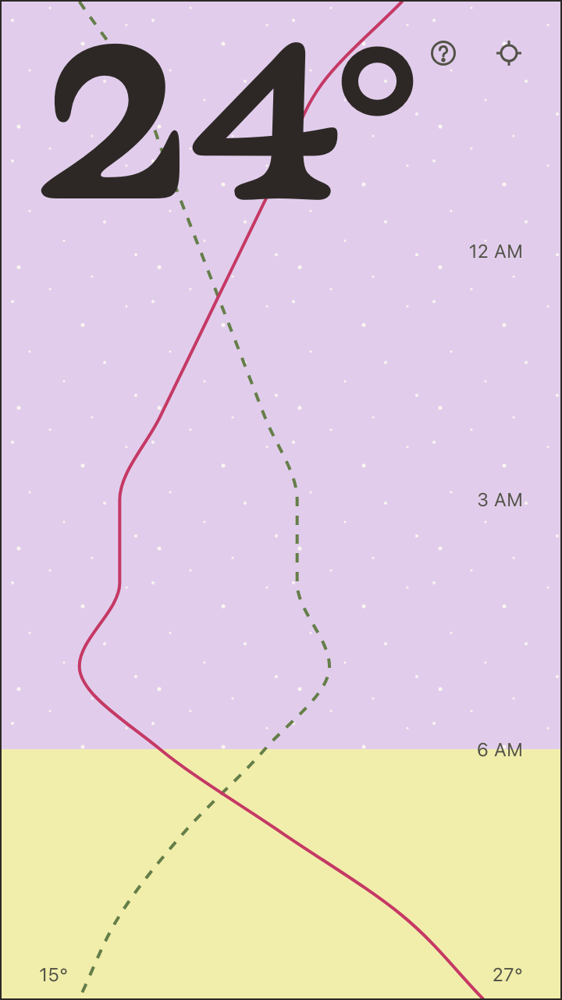
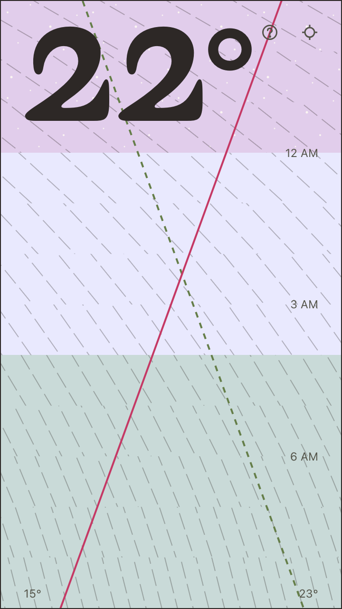
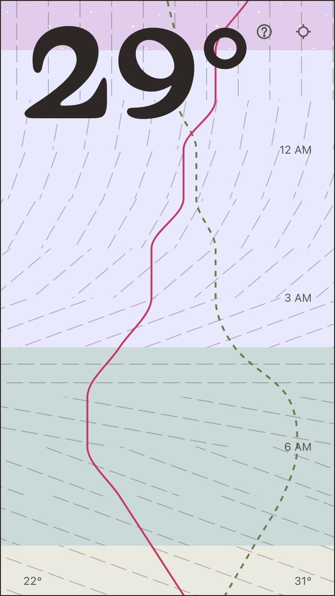
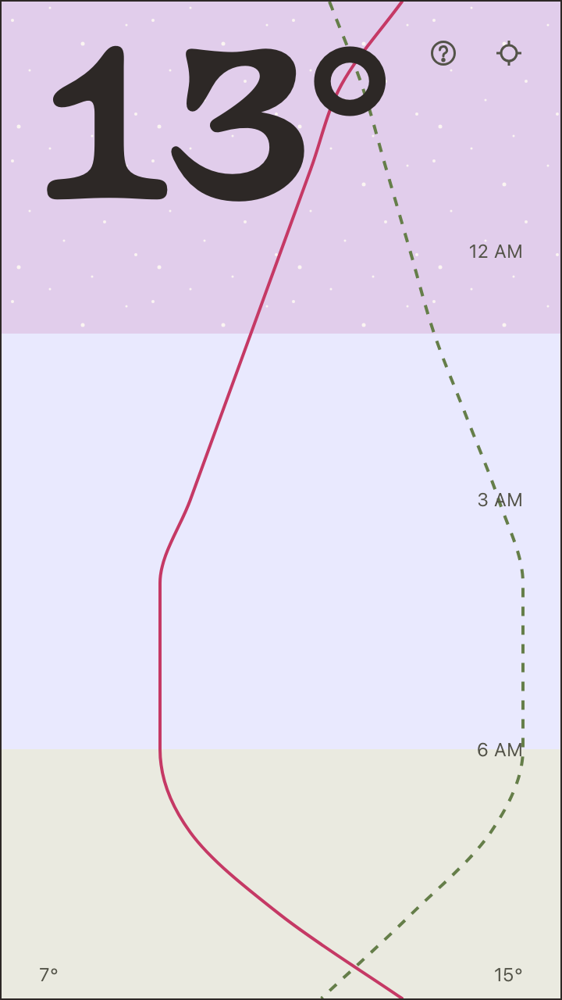

Most weather apps are a list: an icon, a high, a low, repeated once per day. Wjeather asks what a forecast looks like if it’s read the way a painting is read, rather than the way a data table is read — one screen, top to bottom, now at the top and twelve hours out at the bottom, everything overlaid on the same axes instead of separated into cards.
The whole screen is the chart. Semiotic colors and patterns fill the background bands, one band per hour. A pink line traces the temperature forecast as a smooth curve. A dashed green line traces humidity on its own fixed scale, 40% at the left edge and 100% at the right — sharing the width, not exactly the axis, so where it crosses the temperature line means little, but creates nice visuals. And gray hatched lines run with the wind: their angle is the compass direction, north up like a map, and their spacing is the speed.
The wind hatching is worth explaining on its own. Spacing runs on a simple scale: calm air
under 5 km/h draws no lines at all, and by gale force — 60 km/h — the lines sit as close as they’ll
get, tightening linearly in between. So yes, a stronger wind does read as a denser pattern, but
that’s a static property of each hour’s band, not lines being added. What does animate is a short
settle-in drift when the screen first loads or new weather arrives: the lines slide in from the
direction the wind is blowing, slow to a stop, and land exactly where they’d sit with no motion at
all. Faster wind drifts farther, not just faster, so the distance reads as much as the direction
does. It’s under five seconds and skipped entirely under prefers-reduced-motion, so it
needs no pause control under WCAG 2.2.2. — just because I want you to symbolically decode this, doesn't mean I don't want it to follow some accessibility standards!
Clear skies run from yellow by day to purple at night, with stars fading in once it’s dark enough to see them.
Stack
SvelteKit, deployed to Cloudflare Pages, styled with Tailwind. Forecast data is Open-Meteo — free, no key, CC BY 4.0 — fetched down to exactly the fields the screen draws and nothing else. The app asks for the browser’s location and otherwise gets out of the way: no daily cards, no hourly table underneath, just the one chart. As time moves on, the chart updates and you get ever changing new weather paintings.



